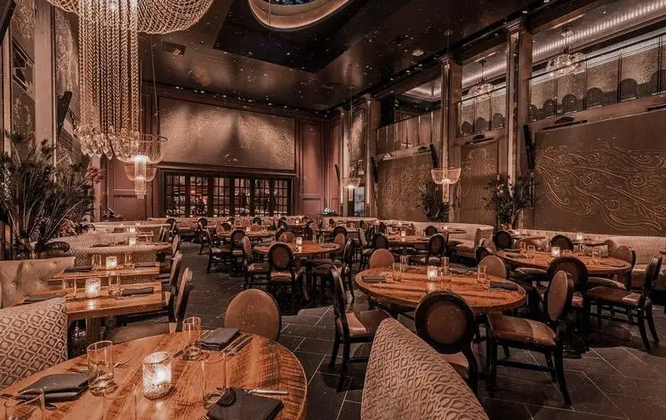

Menelusuri Jejak Rasa
Merayakan kekayaan rempah bumi Nusantara melalui sentuhan teknik memasak kontemporer yang elegan.
Lahir Dari Satu Sudut Kecil di Sudut Kota
Tahun 2008 menjadi titik awal perjalanan kami. Berawal dari sebuah dapur eksperimental berukuran 4x4 meter, SudutRasa didirikan atas dasar kegelisahan sederhana: *mengapa masakan tradisional sering kali dianaktirikan dalam panggung fine dining?*
Kami mulai mengumpulkan resep-resep usang dari berbagai pelosok daerah—mulai dari pesisir Sumatra hingga dataran tinggi Sulawesi. Kami membedah setiap karakter rempah, mempelajari suhu pengasapan tradisional, lalu merakitnya kembali dengan presisi gastronomi modern.
Hari ini, SudutRasa bukan lagi sekadar ruang makan, melainkan sebuah laboratorium rasa yang menjembatani nostalgia lidah masa lalu dengan ekspektasi kuliner masa depan.

Tiga Pilar SudutRasa
Prinsip yang tidak pernah kami tawar dalam setiap piring yang tersaji
Autentisitas Rasa
Teknik plating boleh berubah menjadi modern, namun fondasi bumbu dan esensi rasa asli daerah asal tidak boleh meleset sedikit pun.
Ekosistem Lokal
90% bahan baku kami diambil langsung dari gabungan 45 petani dan nelayan lokal tanpa perantara, demi menjamin keadilan harga dan kesegaran.
Hospitality Hangat
Kemewahan sejati bagi kami bukanlah ketegangan aturan meja makan, melainkan rasa disambut layaknya pulang ke rumah kerabat.
"Makanan adalah bentuk ingatan paling jujur yang bisa disimpan oleh manusia. Tugas kami di dapur hanyalah membantumu mengingat momen terbaik dalam hidupmu."
Mari Menulis Cerita Bersama Kami
Meja makan Anda sudah kami persiapkan malam ini.
Reservasi Tempat Sekarang